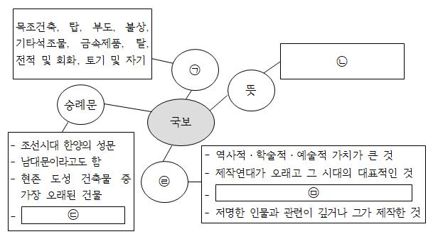

국보란, 보물에 해당하는 문화유산 중 가치가 크고 유례가 드문 것으로 문화유산위원회의 심의를 거쳐 지정된다. 국보로 지정되면 문화유산의 보존 및 활용에 관한 법률에 의하여 국가의 보호를 받는다. 국보로 지정된 문화유산의 종류를 살펴보면 목조건축, 탑, 부도, 불상, 기타석조물, 금속제품, 탈, 전적 및 회화, 토기 및 자기가 있다.
국보는 여러 가지 특징을 지니고 있다. 역사적・학술적・예술적 가치가 크거나 제작연대가 오래고 그 시대의 대표적인 것이 국보가 된다. 국보는 제작 기술이 우수하고 형태・품질・제재・용도가 특이하다. 특히 저명한 인물과 관련이 깊거나 그가 제작한 것을 국보로 지정하고 있다.
예로 숭례문은 보물인 흥인지문과 같은 조선시대 건축물임에도 불구하고 국보로 구분되어 있다. 숭례문은 조선시대 한양의 성문으로 사대문 가운데 남쪽에 위치하고 있어 남대문이라고 불리기도 한다. 숭례문은 조선 초기의 양식적 특징을 그대로 갖추고 있으며 현존 도성 건축물 중 가장 오래된 건물이다. 또한 숭례문은 역사적・건축사적으로 매우 가치가 커 1961년 국보로 지정되었다.
▪출처: 어린이・청소년문화재청 누리집(https://kids.khs.go.kr/)
